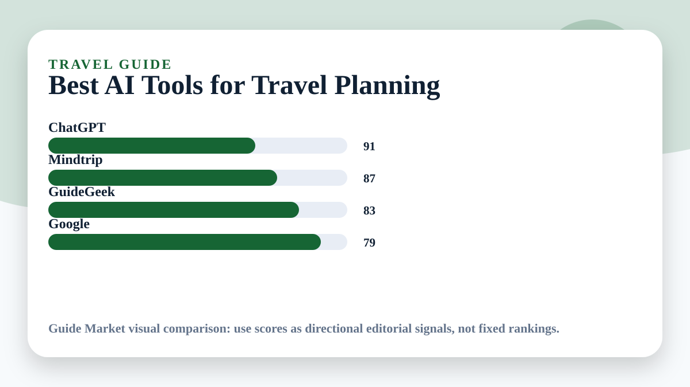
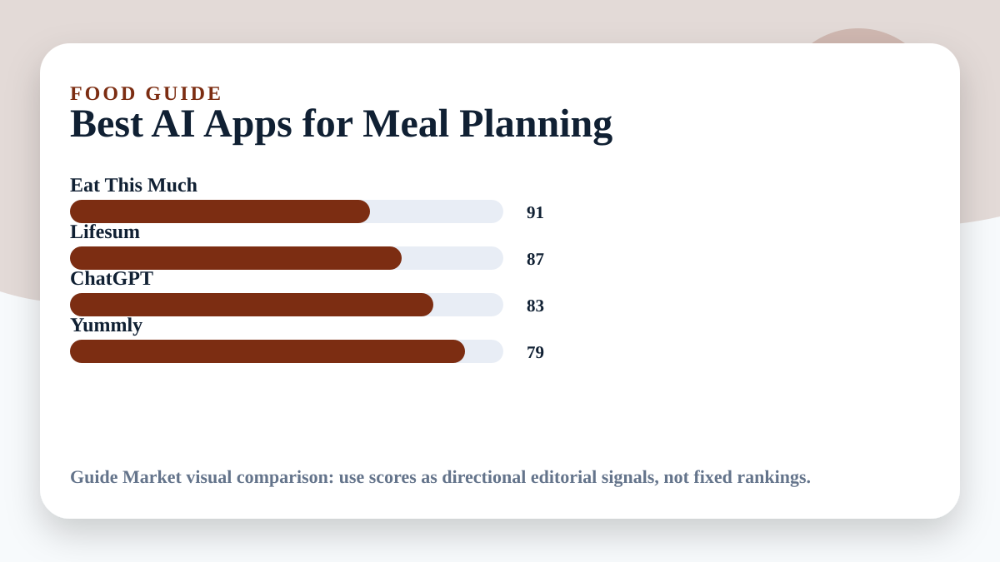
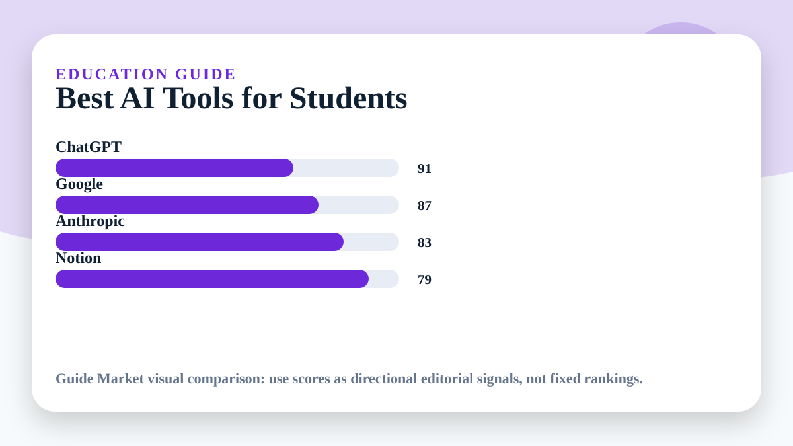
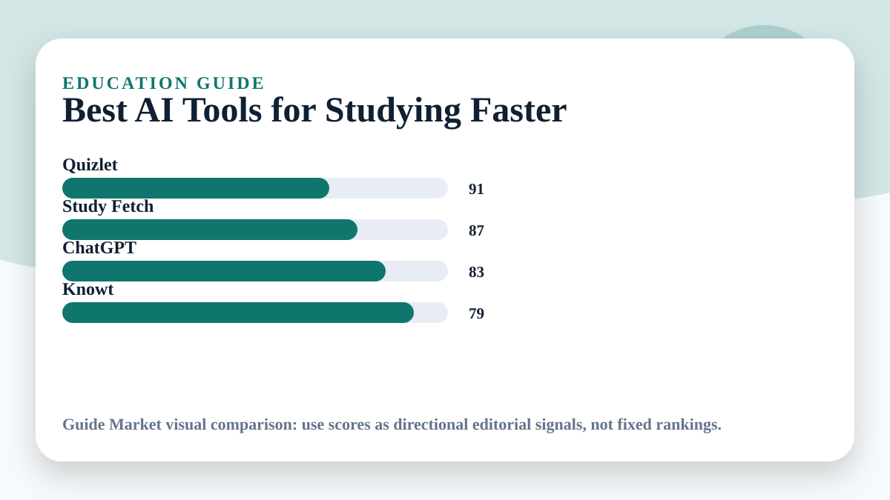

AI buying guides for real life
Find the right AI tool before you waste time, money, or energy.
Guide Market compares practical AI tools for travel, fitness, food, study, money, work, content, business, websites, and daily routines. Every guide is written for people who want clear decisions, not hype.
How to use the site
Choose a category, compare the tools, copy the workflow, then test it.
Each article gives a quick answer, comparison table, tool breakdown, prompts, mistakes to avoid, and a simple recommendation.
PlanCompareActReview
Advertisement
Featured guides
20 best AI tools articles
Start with the topic you need today. The articles are intentionally practical, visual, and easy to scan.

TravelBest AI Tools for Travel Planning
Plan smarter trips without spending hours comparing tabs.
 Fitness
FitnessBest AI Tools for Gym Workouts
Build training plans that fit your body, time, equipment, and goals.

FoodBest AI Apps for Meal Planning
Turn meals into a repeatable system instead of a daily decision problem.

EducationBest AI Tools for Students
Study with more structure, better explanations, and fewer lost hours.

EducationBest AI Tools for Studying Faster
Combine active recall, summaries, and spaced repetition into a simple study workflow.
 Learning
LearningBest AI Tools for Learning Languages
Practice a language every day with feedback, repetition, and real conversation.
 Money
MoneyBest AI Tools for Budgeting Money
Make money decisions easier by turning spending into visible patterns.
 Travel
TravelBest AI Tools for Finding Cheap Flights
Find better flight options by comparing timing, flexibility, and alerts.
 Video
VideoBest AI Tools for Creating TikTok Videos
Move from idea to short-form video faster without losing creative control.
 Design
DesignBest AI Tools for Making Presentations
Build clearer decks with better structure, visuals, and narrative flow.
 Writing
WritingBest AI Tools for Writing Essays
Improve essay planning, drafting, editing, and clarity without outsourcing your thinking.
 Careers
CareersBest AI Tools for Job Interviews
Practice interviews with realistic prompts, feedback, and stronger answers.
 Careers
CareersBest AI Resume Builders
Create a resume that is clear for recruiters and easier for systems to parse.
 Business
BusinessBest AI Tools for Small Businesses
Run leaner operations by automating repetitive work and improving customer communication.
 Marketing
MarketingBest AI Tools for Social Media Content
Produce more consistent social content while keeping a recognizable brand voice.
Best AI Tools for Logo Design
Create a stronger first visual identity before investing in a full design system.
 Websites
WebsitesBest AI Tools for Website Building
Launch better websites faster with no-code builders and AI-assisted structure.
 Productivity
ProductivityBest AI Tools for Productivity
Reduce friction in daily work by connecting notes, calendars, tasks, and decisions.
 Daily AI
Daily AIBest AI Tools for Personal Assistants
Use voice and AI assistants to handle recurring tasks with less manual effort.
 Daily AI
Daily AIBest AI Tools for Daily Life
Use AI as a practical everyday helper for planning, learning, writing, and decisions.
Categories
Browse by goal
Travel
Travel AI guides
Fitness
Fitness AI guides
Food
Food AI guides
Education
Education AI guides
Learning
Learning AI guides
Money
Money AI guides
Video
Video AI guides
Design
Design AI guides
Writing
Writing AI guides
Careers
Careers AI guides
Business
Business AI guides
Marketing
Marketing AI guides
Branding
Branding AI guides
Websites
Websites AI guides
Productivity
Productivity AI guides
Daily AI